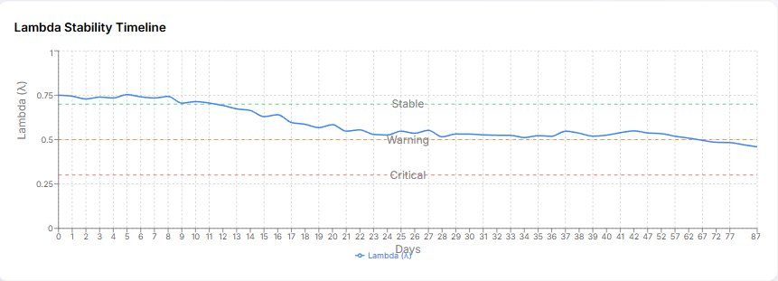

Decline in performance, engagement, and trust rarely arrives suddenly — it builds quietly, then surfaces in your metrics once it is already expensive to fix. Lambda Ethics surfaces the early-warning signals of instability while there is still time, and budget, to act.
Engagement surveys, culture audits, performance dashboards, and risk registers all tell you what has already happened. They report outcomes. None of them tell you whether the organisation itself is becoming unstable — and by the time the outcome is visible, the cheap, effective window to intervene has usually closed.
Lambda Ethics is built to watch the system, not just the symptoms.
Long before a team disengages, an attrition wave hits, or a transformation stalls, the underlying signals shift in measurable ways: volatility rises, recovery from ordinary setbacks slows, and indicators begin to flicker between states. These early-warning signatures are well established across fields from ecology to finance.
Lambda Ethics brings that science to organisational health. Short, regular pulse measurements are translated into a single stability index — watched over time, with the dimensions driving it one click away. When the early-warning signals start firing, you know to act before the decline reaches your KPIs.
A number a board can read at a glance and a practitioner can interrogate in depth — not another subjective traffic-light.

Lambda Ethics tracks organisational conditions over time and flags the statistical signatures of emerging instability — rising variance, slowing recovery, state flickering — so you gain visibility into risk while there is still time to respond.
Considering a restructure, a new operating model, or a major change initiative? Model the likely organisational impact before you commit, and see the second-order effects and unintended consequences while they are still hypothetical.
As organisations rely more heavily on AI-enabled systems, governance can no longer live in policy documents alone. Lambda Ethics produces a measurable, auditable governance profile across:
The output is evidence, not opinion — defensible at board level and under the rising operational-risk and AI-governance expectations facing Australian organisations.
Lambda Ethics is grounded in a series of research preprints applying critical-transitions theory to organisational systems, with a patent-pending measurement method (Australian provisional patent). The underlying science is well established across disciplines; applying it to organisational health is what is new.
Dr Timothy Mortensen is a physicist and transformation leader with over 25 years delivering large-scale programs across energy and financial services. Lambda Ethics began when he applied critical-transitions theory — the physics of how complex systems destabilise before they fail — to the organisations he was helping to change. The early-warning science behind the platform is drawn directly from that work.
See the platform on real data and discuss whether a pilot fits your organisation.